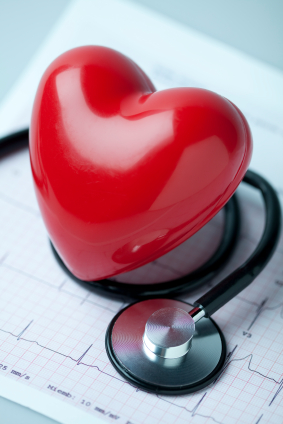
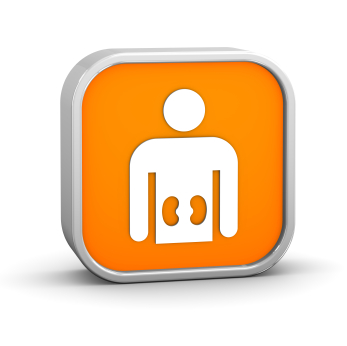

Why reduce salt?
Salt can raise blood pressure leading to strokes and heart disease. Lowering salt intake lowers blood pressure and so reduces the risk of stroke and heart disease. For people with kidney disease, lowering salt intake can slow the deterioration in kidney function.
Blood Pressure
There is very good evidence that salt can make your blood pressure higher. High blood pressure has many bad effects. It makes it more likely that you will have a stroke, a heart attack and develop kidney failure. High blood pressure can also damage other blood vessels including those in your eyes.
If you already have high blood pressure and are on treatment for it, then lowering your salt intake can help to reduce the amount of medication that you need to control your blood pressure. |
Heart disease
Salt raises blood pressure. High blood pressure causes heart disease including heart attacks, angina and heart failure. If you can lower your salt intake you will lower your blood pressure and so reduce the chance of getting heart disease.
If you already have heart disease, then lowering your salt intake will help to lower your blood pressure and so reduce the strain on your heart. If you already have heart failure, lowering your salt intake may help reduce the amount of swelling and fluid retention that you experience. The swelling and fluid retention happen because your kidneys are not able to get rid of all the salt that you are eating. |
 |
Strokes
Salt raises blood pressure. High blood pressure causes strokes and mini-strokes or transient ischemic attacks (TIAs). If you can lower your salt intake you will lower your blood pressure and so reduce the chance of having a stroke.
If you have already had a stroke, then lowering your salt intake will help to lower your blood pressure and so reduce the chance of having a further stroke. |
Chronic kidney disease
High salt intake can make kidney function deteriorate more quickly than it would otherwise. This means that for people with chronic kidney disease(CKD), lowering salt intake can help to keep the kidneys working well for longer. This is partly because salt raises blood pressure and high blood pressure can damage kidneys. However, the kidney is the organ that removes salt from the body and a high salt intake seems likely to have a direct effect on kidney function.
If you have advanced chronic kidney disease (CKD), then your kidneys may find it difficult to get rid of the salt that you eat. If this salt accumulates, then water will accumulate with it in your body. This causes fluid retention or swelling especially of your ankles. It can also cause your blood pressure to rise. If you have CKD you may be given a diuretic (a ‘water tablet’) to help your kidneys to remove the salt from your body. By helping your kidneys to remove the salt, it helps remove the water with it. As a result you may notice that you pass more urine than normal after taking the tablet. Commonly used diuretics are furosemide (previously called frusemide), bumetanide and bendroflumethiazide previously bendrofluazide). If your kidneys are struggling to eliminate the salt that you are eating, then it makes sense to try to reduce the amount of salt that you are eating and so make it easier for your kidneys to do their job. |
 |
Cancer
A high salt intake increases the risk of stomach cancer. A study by Cancer Research UK has shown that a high salt intake doubles the chance of getting stomach cancer. The World Cancer Research Fund estimates that reducing salt intake to 6 grams per day would prevent over 1000 case of stomach cancer each year in the UK. Salt also increases the risk of stomach ulcers and has effects on the bacteria that cause stomach ulcers.
Stomach ulcers
A high salt intake increases the risk of stomach ulcers. Stomach ulcers are usually caused by a bacterial bug that can irritate the stomach lining. Salt alters the properties of this bug in a way which seems to make it more likely to cause ulcers. Remember to look at the label to see how much salt is in the food you are eating.